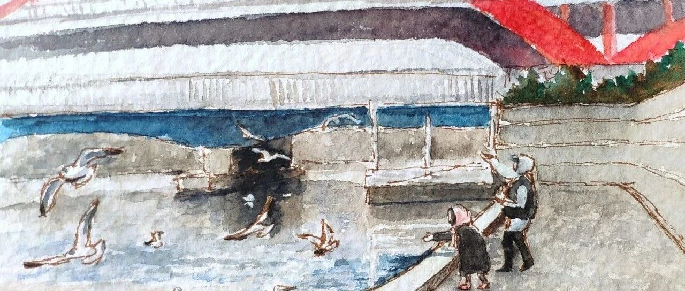

Winter Days.
今天是一篇关于家乡天津的安利作品 ，感谢投稿～
，感谢投稿～

每到冬天，海河开始结冰，就陆续有海鸥飞来。随着结冰面积扩大，海鸥越来越多。或许是因为冬季海上实在太冷，这些可爱的吃货们才会到城市里来“化缘”。
大量海鸥集结在海河之上，成为天津冬日最靓丽壮观的风景。

天气晴好，和同事朋友一块逛逛海河沿岸，欣赏漫天飞舞的海鸥。
有的海鸥突然俯冲抢夺游人手中的面包或烧饼，虽然行为霸道，但它们的“理所当然”却格外可爱。抬头看海鸥高空盘旋，在蓝天白云的背景下，在天津之眼的映衬下，发现不一样的风景。有些海鸥成群结队，同时起飞，在金钢桥下集体滑行，相当壮观。
喜欢海鸥的人们认为海鸥是吉祥鸟，是幸福鸟。喂食海鸥会给人们带来幸福吉祥。
还有人说，海鸥飞处诗自来——